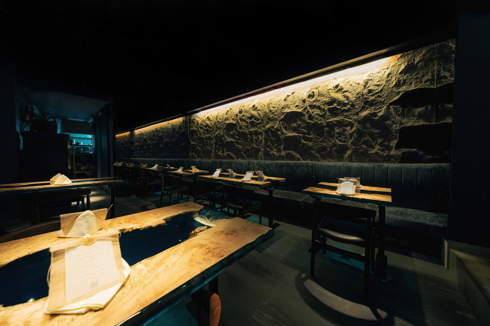
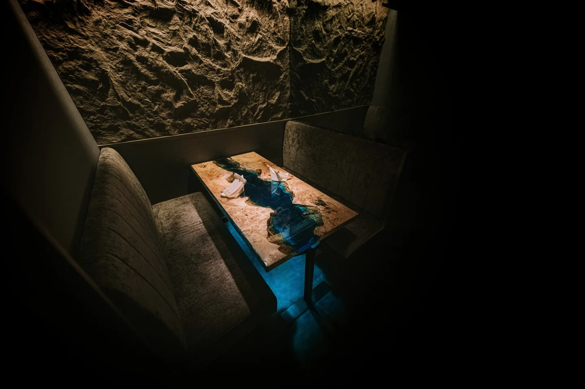

はじめての方に
まずは、ETHICA の物語をそのまま。
地球46億年の
いちばん
- おすすめ
- ETHICA コレクション
- 席・人数
- テーブル席・1〜8名
- コース
- 全8章


銀座 ETHICA | 二ツ星MAZ出身シェフのイノベーティブ（ペルー料理×フレンチの技法）・ミシュラン3年連続掲載

ミシュランガイド東京 3年連続掲載
地球46億年の
Philosophy

メニューに
時空の
Cenote
銀座に
大地は、
青い
1皿目、38億年前
最初の
↑浮上して、
2皿目、3億年前
背骨を
↓深く
3皿目、46億年前
さらに
↑浮上して、
4皿目、5億年前
植物が
↑浮上して、
5皿目、2億年前
恐竜の
↑浮上して、
6皿目、6600万年前
恐竜の
↑浮上して、
7皿目、500年前
500年前、
↓深く
8皿目、4億年前
最後に
↑水面へ
いま
旅の
ETHICA コレクション・2026年秋の
Plates
これまでに


Executive Chef
エグゼクティブシェフは、
MASAO ANDRÉS MATSUNAE GUZMÁN
MAZ
The Cave
岩壁に



Occasions
大切な
はじめての方に
地球46億年の
いちばん
二度目からのご来店に
コレクションの
食材は

誕生日・記念日に
希少な
特別な
デートに
メニューに
はじめての
会食・接待に
盛り付け場から
ミシュランガイド東京 3年連続掲載。
この後ご予定がある夜に
「この
お席の
Courses
ミシュランガイド東京 3年連続掲載
迷われたら、
この後ご予定がある夜に
全5章・テーブル席・1〜8名
「この
14,800税込
空席を見るはじめての方に
全8章・テーブル席・1〜8名
地球46億年の
19,800税込
この旅の空席を見る特別な夜に
全9章・テーブル席・1〜8名
コレクションの
24,800税込
空席を見る
デート・記念日に・1〜2名
全9章・キッチンの
キッチンの
27,800税込
カウンターの空席を見る
会食・接待に・2〜4名
全9章・キッチンの
キッチンの
29,800税込
個室の空席を見る誕生日・記念日に・2名〜
全9章・テーブル席・2名〜・メッセージプレート付き
グランド・コレクションの
25,200税込
記念日コースの空席を見るベジタリアンの方に・1〜8名
全8章・テーブル席・1〜8名
ETHICA の
19,800税込
空席を見る料金は
※
Q&A
ETHICA の
ショートコース
手描きの
キッチンの
料理に
アレルギーは、
はい。
スマートカジュアルで
クレジットカード
空席が
20名様までの
Access
ミシュランガイド東京 3年連続掲載
この